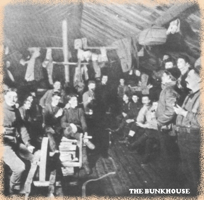
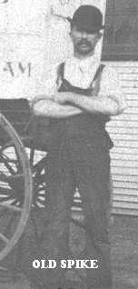
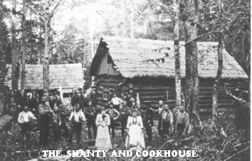
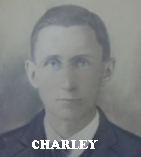
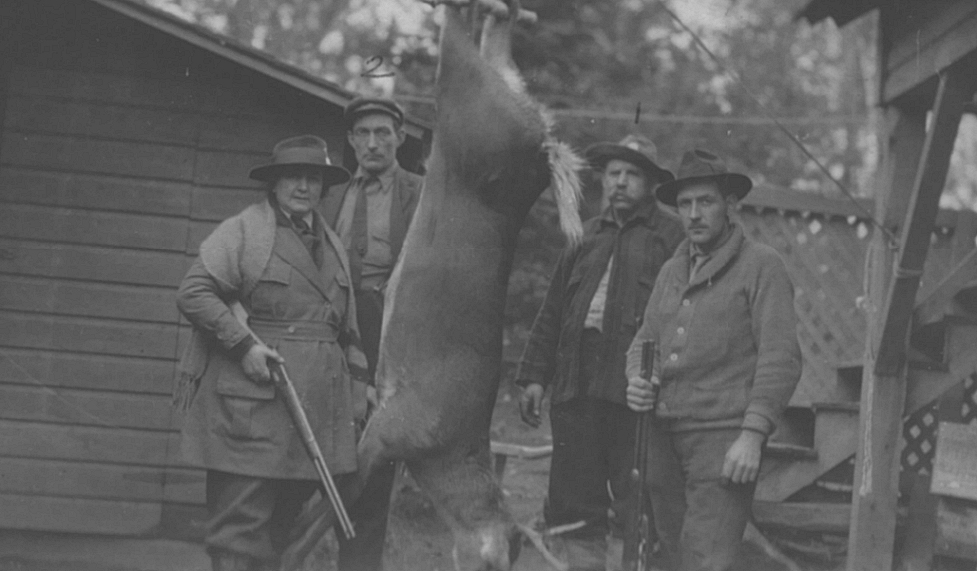
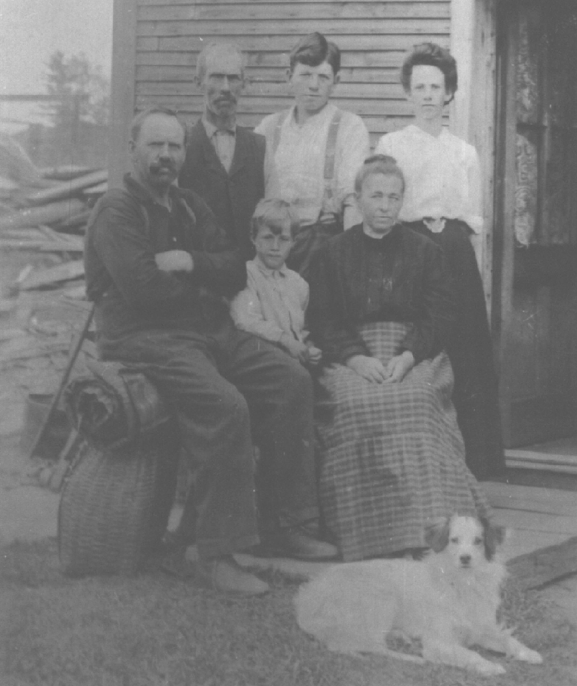
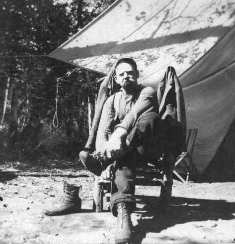
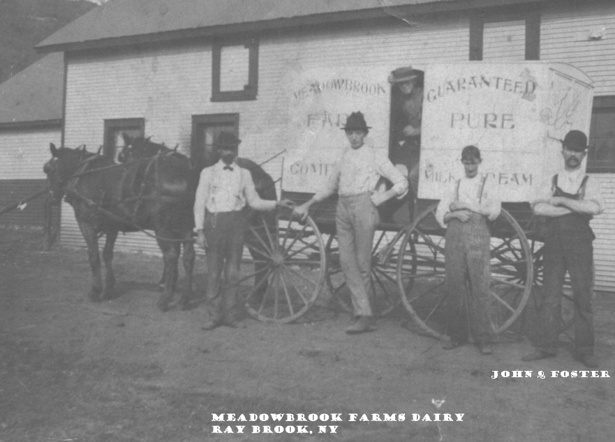
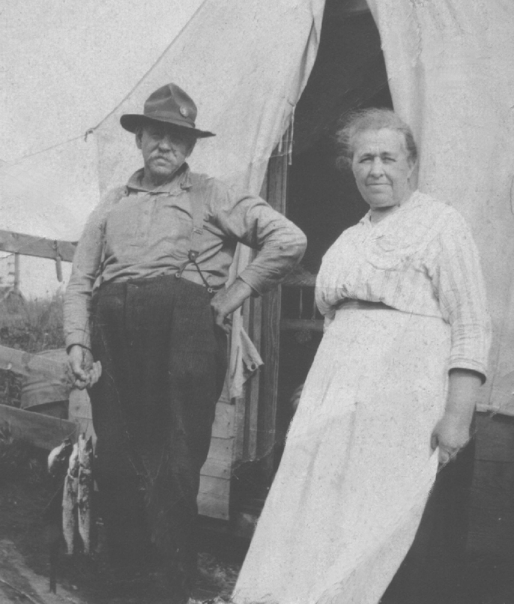

With the vast quantities of trees readily available and a growing demand for building materials and fuel, logging became an important industry for the Adirondacks and this industry needed a hard working and tough breed of men. Lumbering required men who could work long hours under the worst of conditions. Hot summers and black flies found the men weilding their axes from sunup to sundown. Floating the logs down river often involved dangerous log jams which had to be manually broken. Cold, harsh winters involved skidding logs during early morning, before the sun softened the skid track. There was constant danger from falling trees, log jams, runaway loads on icy hills, frostbite, fires and disease. It was a stressful occupation and a moment of carelessness, more often than not, resulted in loss of life or limb. The men had to trust each other's abilities fully and those who violated that trust were not long on the team.
As you can imagine, fifteen or so men, mostly young and of diverse nationalities and opinions, living under the same roof often created a volatile situation. This is where the lumber job boss could make the difference between chaos or affinity among the men. He had to be physically able to handle any situation and accomplish this feat with wisdom and in a manner that would gain him respect not contempt. If he could do this while maintaining a sense of humor it was a big plus for him and the men. A good lumber boss was the foundation of a hard working and faithful team of lumberjacks.
Some of the lumber bosses had their wives and sometimes children working with them as cooks and helpers. A woman's touch made conditions more livable and homelike. My great grandfather, John Q "Old Spike" Foster was one such boss. My great grandmother, Alvira, kept the chow coming and kept order in the dining area while my grandmother, Mae, at thirteen, waited on table and helped keep the eating area neat and tidy. The phrase "eating like a lumberjack" was no exaggeration. Mae had left her schooling to help with the care of her younger siblings and help out at the lumber camp.
I was fortunate recently to receive a poem that Mae had written, most likely under the light of a kerosene lamp one winter night after her chores were completed. It was written in 1898, so the paper it was written on was yellow and brittle but still easily readable. The poem is interesting not only because of the fact that, in spite of the lack of modern conveniences in 1898, a thirteen year old could complete a day of housework and still find time to be creative but because of the humor that shows through. It's also interesting because she mentions the name of every lumberjack at the camp.
A couple of footnotes:
Charley, the chore boy, was Charles Phillips, my grandfather. Mae married him three years later at the ripe old age of sixteen. He was eighteen.
The Jolly Old Elf, Mr. Colbath was "Hose" Colbath. He was, along with George E. Colon, Dr. Trudeaus guide and had once arranged a shooting match between Dr. Trudeau, Mace Colburn and "Adirondack" Murray. He bet on the old Doc and won a bundle.
The "State Dam" Mae refers to is the lower locks. The lumber camp was on Miller Pond.
Here's the poem: (remember, folks, this was long before Dr. Seuss and besides she was just a kid!)
He lives in a shanty up near the State Dam.
He's boss of a lumber job, has quite a few men.
Their names you will learn as you read to the end.
The boys they all call him "Old Spike" just for fun.
He laughs at their jokes and helps make every one.
He has his wife with him, who cooks for his men.
And also a daughter who helps wait on them.
He affords them a chore boy both young and fast
who works every hour from the first to the last.
His right name is Charley but they call him "Young Spike"
And I wonder why, for he's not one to fight.
He's really good natured, at least round the house.
He seems, when you see him, as still as a mouse.
Then there's big Mr. Colbath, a jolly old elf.
He eats with the rest but rooms by himself.
There's Tommy and Arthur and Willis and Sam.
They're having great sport in the camps near the dam.
They each have a knickname, in a shanty it's law.
There's Sideburns and Bounce, McGee and McGraw
Oh, yes, and there's others, there's more yet you see.
There's Mr Matt Carr and old Patsy Laughee
Patsy, he's teamster and goes every day
To take the big logs to the mill, so they say.
And Matt, he's the chopper, he makes the trees fall.
And though he's a worker, he's not very tall.
And then there's another, they call Mr Shene
I don't know his knickname though, he has one I mean.
I think he's a loader although I don't know.
You could find out by asking the boss if 'tis so.
Oh yes, Mr Doyle, I must put him in
I must not forget not one of the men.
Fergy, they call him but only in fun.
I guess if they meant it he'd give them back one.








John Foster aged 66, popular Adirondack Guide, died at the General Hospital here on Saturday morning following an illness caused by diabetes from which he had suffered for some time past.
Mr. Foster has spent his entire life-time in and near Saranac Lake and is well known in this vicinity, having followed his occupation as a guide and woodsman for many years in various parts of this section of the Adirondacks. His skills as a woodsman and love of the Adirondacks won him admiration from peers and clients alike.
He is survived by his wife, Alvira M. Stanton Foster and seven children: Mae, Benton, Ernest, Melvin, Herbert, Etheline, and Bessie. He is also survived by several Grandchildren.
Funeral services were held at two thirty o'clock this afternoon from the Methodist Church. Interment will be at Pine Ridge Cemetery.